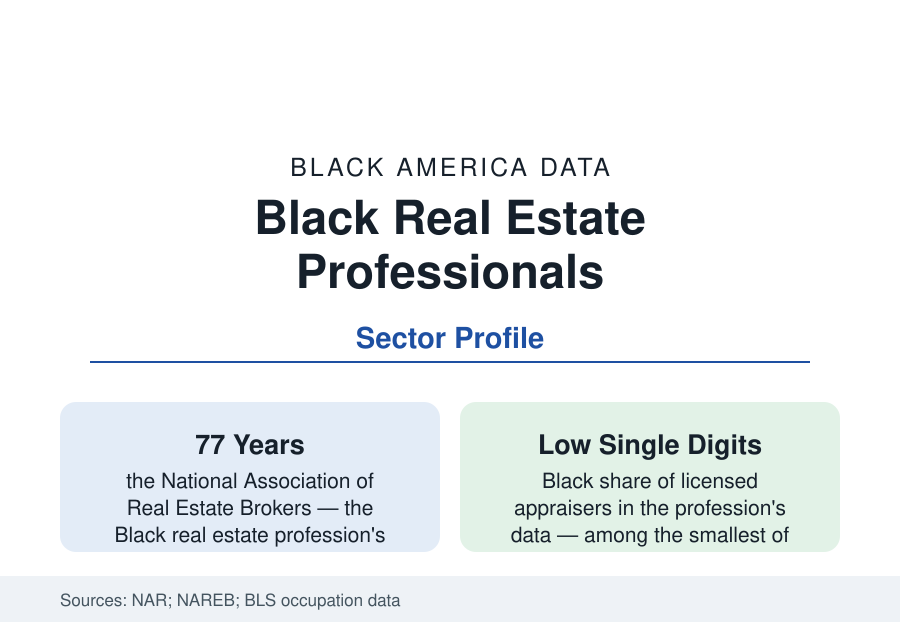

Black Business
Black Real Estate Professionals: Realtists, Brokers, and the Appraisal Gap
Black professionals form a small share of real estate brokerage and a sliver of appraisal — the gatekeeping professions of the housing market. The industry data.

The professions that operate the housing market — selling it, financing its valuation, and setting its prices — are among the least integrated in the business data. Black professionals hold a modest share of real estate sales licenses, a smaller share of brokerage ownership, and roughly one to two percent of the appraisal profession. The National Association of Real Estate Brokers, founded in 1947 when Black agents were excluded from the mainstream boards, built a parallel profession whose members still call themselves Realtists. This article reports the real estate professions' data.
Sales: Licenses, Membership, and the Volume Gradient
The National Association of Realtors' membership profiles and the licensing counts place Black agents in the mid-single-digit percentages of the profession nationally — several tens of thousands of agents, concentrated (like the population) in the Southern and big-metro markets where several of the nation's largest Black-owned brokerages operate. The profession's internal data describe the familiar volume gradient: agent income in residential sales is brutally skewed (the median agent closes a handful of transactions a year; the top decile closes dozens), and the Black agent distribution sits disproportionately in the industry's lower-volume half, for the structural reasons the housing data supply — an agent's book is built from their network's transactions, and the network's wealth, turnover, and price levels are the census section's own variables. The counterweights are the big Black brokerages and franchises (several rank among the highest-volume firms in their metros), the luxury segment's growing Black presence in the appreciation markets, and the investor-agent channel, where the wholesaling and landlord economy of the investor profile recruits its operators.
Appraisal: The Profession's Extreme Case
Appraisal is the business data's representation floor. The profession's demographic surveys and the BLS occupation counts place Black appraisers at roughly one to two percent of the licensed workforce — the smallest share of any major licensed profession in the data — in the occupation that prices every house in America. The pipeline explains part: entry requires a supervising appraiser's sponsorship (a guild gate), years of trainee hours, and fees, all filtering against the networks the profession's incumbents hold. The outcomes literature supplies the stakes: the Brookings and Freddie Mac analyses of the appraisal gap (homes in Black neighborhoods appraised below contract price at elevated rates; the industry's own automated-valuation comparisons) sit atop a profession whose automated future — appraisal waivers, hybrid and desktop appraisals, AVM pricing — is being designed now, with the bias-testing of the models contested between the industry and the fair-housing data community. The reform file is active: trainee-access programs, the PAREA practical-training pathway (created to break the sponsorship gate), and federal appraisal-bias initiatives all postdate 2020, and their enrollment data are the profession's current story.
The Realtist Institution and the Housing Mission
NAREB's data and doctrine distinguish the Black profession's self-understanding: 'democracy in housing' — the 1947 founding mission — frames the agent's work as wealth infrastructure, and the organization's 'Building Black Wealth' program quantifies the target in the census section's terms (raising Black homeownership toward parity as a two-million-household project in its published goals). The profession's community functions appear throughout the city profiles: the Black brokerage as the historic district's anchor business, the agent as the neighborhood's market-maker and informal appraiser of record, the Realtist local boards as civic institutions. The commercial side — Black commercial brokers and the CCIM ranks — records shares thinner still, in the sector where the business section's real-estate values concentrate.
Development and the Adjacent Professions
The property professions' outer rings complete the profile: Black developers (a small set of firms of scale, several of them the housing layer's builders in the gentrification-era districts, operating on the public-land and tax-credit programs), Black mortgage professionals (the loan-officer ranks of the financing profile), home inspectors, title and closing professionals, and the property-management sector (a substantial Black business layer in the multifamily data). Each ring records the same shape — presence at the service layer, thinning at the capital layer — that the homeownership profile's market machinery predicts: the professions mediating other people's assets integrated faster than the ownership of the assets themselves.
Reading the Real Estate Professions Data
The Realtist file is the housing market's self-portrait: the people who sell, price, and finance Black America's homes are drawn only thinly from Black America — one to two percent at the valuation desk where the wealth gap is literally computed. The profession's reform era, now underway in the trainee and bias files, is being graded by the same census tables that grade everything else in this reference.
More in Black Business
Black-Owned Businesses: Counts, Receipts, and the Representation Gap
About 161,000 Black-owned employer firms and three million solo ventures: how the Census Bureau counts Black business ownership, where firms concentrate, and the gap between population share and business share.
Black Median Net Worth: The Wealth Gap in Federal Reserve Data
The Federal Reserve puts Black median family net worth at $44,900, against $285,000 for White families — about 16 cents on the dollar. The widest gap in economic data.
Black Buying Power: The $1.8 Trillion Consumer Economy
Black buying power is estimated at about $1.8 trillion — larger than the economy of most nations. What the figure measures, who produces it, and what it buys.
Source: National Association of Realtors member data; National Association of Real Estate Brokers; Appraisal Institute and Bureau of Labor Statistics occupation data; Brookings appraisal research.